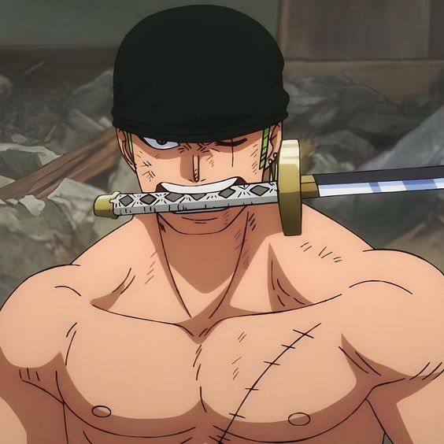
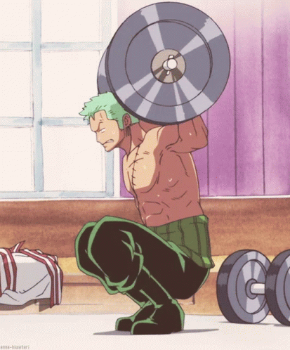
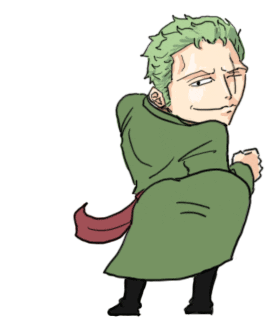

Who is Zoro?
Roronoa Zoro, formally a Pirate Hunter, is a
swordsman from the East Blue.
He is the
embodiment of masculinity, discipline, stocisim and loyalty.
Click Here For A Surprise
STRENGTH
RESISTANCE
IMPROVEMENT
Zoro's three swords are collectively known as the "Santoryu" (Three-Sword Style). Each sword has its own significance and story.
Wado Ichimonji is Zoro's primary and most cherished sword. It was a family heirloom, handed down from generation to generation in the Kuina family.
Fax no Printer (📠)
- Before joining the Straw Hat Pirates, Zoro worked as a bounty hunter.
- Zoro has a prominent scar over his left eye, which he received from his own actions during his training with his mentor, Dracule Mihawk.
- Zoro is infamous for having an incredibly poor sense of direction. He frequently gets lost, leading to humorous situations where the crew must find him.
- In the anime, Zoro often delivers dramatic and inspiring lines, known as "eyecatcher lines," that reflect his determination and warrior spirit.
- Zoro is recognizable by his distinctive green hair and his signature white bandana, which he often wears tied around his left bicep.
- Zoro is portrayed as a serious and focused individual. He often provides a strong, pragmatic voice within the crew.
- Another fun fact: He's my favorite character in the entire show!
THANK YOU!
